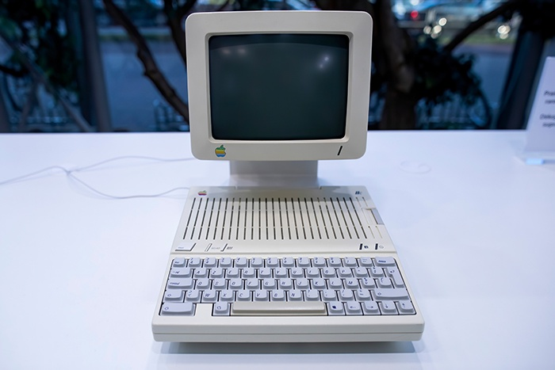

История Apple начинается с одного гаража и трех друзей. Два
Стива — Джобс и Возняк — пожалуй, самые заметные
основатели компании. Но без их друга Рональда Уэйна, скорее
всего, не было бы iPhone, iPad и iMac. Подробно рассказываем
историю Apple — от выпуска первых персональных
компьютеров Apple I и Apple II до превращения во всем
известного технологического гиганта.
Содержание
Создание стартапа: сборка компьютеров в
гараже
Джобс и Возняк познакомились в 1971 году через общего друга Билла Фернандеса, который впоследствии стал одним из первый сотрудников Apple. Они поладили благодаря общему интересу к технологиям и пранкам. Вместе Джобс и Возняк посещали клуб компьютерных энтузиастов Homebrew Computer Club, который собирался в Менло-Парк в Калифорнии с 1975 года. Там Возняк впервые увидел микрокомпьютер Altair от MITS и вдохновился подходом компании «сделай сам» (Altair продавался как набор комплектующих). Ему захотелось создать что-то более простое для потребителя.
Так Возняк собрал первый компьютер с клавиатурой, похожей на пишущую машинку. Вместо экрана к нему можно было подключить обычный телевизор. Изобретение, позже получившее название Apple I, стало прототипом современного компьютера. Однако Возняк не стремился изменить мир своей разработкой — он просто хотел похвастаться тем, как много ему удалось сделать с таким небольшим количеством ресурсов.
Джобсу понравилось изобретение Возняка, и он продал свой микроавтобус VW, чтобы профинансировать его производство. Возняк продал свой калькулятор HP (в то время он стоил дороже, чем современные аналоги), и 1 апреля 1976 года вместе с Рональдом Уэйном они основали Apple Computer Inc.
РЕКЛАМА ТУТ БУДЕТ
Выход первого компьютера от Apple – Apple I
Возняк собирал каждый компьютер собственноручно. Он хотел продавать их дороже стоимости комплектующих, чтобы компенсировать затраты. Но у Джобса были планы покрупнее. Он заключил сделку с Byte Shop в Маунтин-Вью, Калифорния, на поставку 50 компьютеров по $500 каждый. С наценкой магазина Apple I продавался за $666,66. Легенда гласит, что Возняк просто любил повторять числа и не знал связи с «числом Дьявола».
Джобсу понравилось изобретение Возняка, и он продал свой микроавтобус VW, чтобы профинансировать его производство. Возняк продал свой калькулятор HP (в то время он стоил дороже, чем современные аналоги), и 1 апреля 1976 года вместе с Рональдом Уэйном они основали Apple Computer Inc.
Инвесторы и первый успех
Семья и друзья Стивов собирались за обеденным столом и помогали им собирать компьютеры. После проверки на исправность Джобс отвозил их в Byte Shop. Несмотря на многочисленные недостатки, Apple I все же пользовался успехом и производился с апреля 1976 года до сентября 1977 года. Всего было продано около 200 единиц.
Благодаря успеху Apple I Джобс и Возняк решились на создание следующей модели. Apple Computer Inc была зарегистрирована 3 января 1977 года. Мультимиллионер Майк Марккула, заинтересованный Apple I, предоставил компании необходимое финансирование и знания о бизнесе. Марккула стал третьим сотрудником Apple и владел одной третью доли.
Выход второго компьютера от Apple – Apple II
В апреле 1977 года на выставке West Coast Computer Faire был представлен Apple II. Как и предыдущий компьютер Apple, это было по-настоящему инновационное устройство. Он предлагал:
цветную графику;
накопитель на магнитной ленте (который позже был заменен на 5,25-дюймовые дискеты);
объем памяти в размере 64K в топовых моделях;
NTSC-дисплей с разрешением 280 x 192, что в то время считалось высоким.
Однако таких характеристик было недостаточно, чтобы оправдать стоимость в $1300. Лишь несколько месяцев спустя представился идеальный способ: инновационная программа для создания электронных таблиц и вычислений VisiCalc, совместимая с Apple II. Благодаря этому новинке удалось превзойти лидеров рынка Tandy и Commodore PET. По мнению самой Apple, программа принесла пятую часть продаж всех устройств этой серии.

Второй компьютер от Apple. Фото в цвете.
Но конечно, Apple II не удалось бы добиться успеха, если бы он не соответствовал уже установленным в то время высоким стандартам компании. В течение 16 лет было произведено почти шесть млн копий Apple II, что стало вторым большим успехом. Однако лучшие дни еще были впереди.
К 1978 году у Apple уже был свой офис с несколькими сотрудниками. В последующие годы доходы компании стремительно росли, удваиваясь каждые четыре месяца. С сентября 1977 года до сентябрь 1980 года годовые продажи Apple выросли с $775 тысяч до $118 млн (среднегодовой темп роста — 533%).
Apple вышла на биржу 12 декабря 1980 года по цене $22 за акцию. По данным EDN Network, акции компании стоимостью $4,6 млн были моментально распроданы и принесли больше капитала, чем любое другое IPO с момента выхода Ford Motor Company в 1956 году. После этого крупнейший акционер Apple Стив Джобс получил состояние в размере $217 млн.
Провальные разработки от Apple
В 1979 году Джобсу и нескольким сотрудникам Apple было разрешено посетить научно-исследовательский центр Xerox PARC в Пало-Альто, Калифорния. Он известен благодаря разработке лазерного принтера, компьютерной мыши, сети Ethernet и прочим технологическим достижениям. В обмен Apple предоставила Xerox возможность купить 100 тысяч акций компании по $10 за штуку.
К 1980 году IBM и Microsoft занимали все большую долю рынка. Чтобы конкурировать с этими компаниями в сфере корпоративных вычислений, в тот же год Apple выпустила Apple III. Однако новинка не получила успеха из-за ошибки проектирования. Чтобы сделать компьютеры менее шумными, Джобс предложил убрать вентиляторы и вентиляционные отверстия, из-за чего они перегревались.
Во время пребывания в лабораториях Xerox PARC Джобс убедился: во всех будущих компьютерах должен быть графический пользовательский интерфейс (Graphical User Interface, GUI), аналогичный тому, что сегодня используется повсеместно. Он сразу приступил к разработке GUI для компьютера Apple следующего поколения — Apple Lisa.
Однако в дальнейшем Джобс был исключен из команды Lisa из-за внутренних разногласий и присоединился к другому проекту по разработке бюджетного компьютера Macintosh. Lisa был выпущен в 1983 году и продавался очень плохо из-за высокой цены и ограниченной поддержки ПО.
Проект Macintosh и его провал
После того, как Джобса исключили из команды Lisa, он возглавил разработку Macintosh. По сей день Macintosh известен как самый удобный в использовании, а также первый персональный компьютер со встроенным графическим интерфейсом и мышью, вышедший на массовый рынок.
В отличие от Lisa, Macintosh стал настоящим успехом благодаря активной маркетинговой кампании. Особенно знаменит культовый рекламный ролик «1984», снятый Ридли Скоттом, который транслировался во время Супербоула.
Несмотря на то, что используемое графическое оборудование было очень дорогим, Apple решила продавать Macintosh по более доступной цене для обычных пользователей. Дизайнеров привлекли черно-белая графика и визуальные возможности устройства. По этим же причинам Macintosh стал особенно популярен на рынке настольных издательских систем. К тому же он был довольно портативным благодаря специальной ручке для переноски.
Macintosh поступил в продажу в январе 1984 года за $2495 — хорошее соотношение цены и качества, но все же недешево. К началу мая 1984 года было продано 70 тысяч единиц благодаря рекламному ролику «1984».
В 1983 году, незадолго до выпуска Macintosh, Джобс нанял Джона Скалли в качестве нового CEO Apple, так как второй CEO Марк Марккула решил уйти на пенсию. В то время Скалли был самым молодым CEO Pepsi, но Джобс переманил его в Apple легендарным вопросом: «Ты хочешь продавать сладкую воду до конца своей жизни? Или ты хочешь присоединиться ко мне и изменить мир?».
Однако отношения между Джобсом и Скалии становились все напряженнее, когда Macintosh не смог обойти доминирующую на рынке продукцию IBM. К тому же Джобс любил делать все по-своему, а Скалли хотел строго контролировать будущие продукты, так как Lisa и Macintosh провалились перед конкурентами.
В 1985 году между Джобсом и Скалли возник конфликт, в результате которого Джобс покинул должность и основал новую компанию NeXT. Примерно в то же время Стив Возняк также ушел из компании, продав большую часть своих акций.
Место Джобса занял Жан-Луи Гассе. После этого правление Apple решило ориентироваться на высокотехнологичные рынки и продавать компьютеры по более высокой цене. Согласно новой политике «55 or die», разработанной Гассе, Macintosh II должен был приносить не менее 55% прибыли с каждого устройства. В 1991 году Apple представила ноутбук PowerBook и операционную систему System 7, которая использовалась до выпуска OS X в 2001 году.
В 1990-е годы Apple пыталась пробиться на новые рынки с помощью персональных карманных компьютеров Newton MessagePad и eMate. Однако из-за высокой стоимости в $700 и функциональных ограничений они не имели большого успеха на рынке. Чтобы восстановить продажи, Apple выпустила более дешевые модели компьютеров: Macintosh Classic, Macintosh LC и Macintosh IIsi.
В течение нескольких лет политика «55 or die» дала обратный эффект, так как продукция IBM дешевела, а Microsoft лишь повышал свое влияние. Чтобы восстановить положение на рынке, Apple представила целую линейку новых компьютеров: Quadra, Centris и Performa. Но это не принесло особых результатов. Компания также экспериментировала с разработкой цифровых фотоаппаратов, портативных CD-плееров, динамиков и телевизоров. Но все эти проекты были неуспешны: рыночная доля и стоимость акций продолжали снижаться.
Из-за многих ошибок и неверных решений Скалли был уволен в 1993 году. Новым CEO стал Майкл Шпиндлер, работавший в Apple с 1980-х годов. В 1994 году был выпущен Macintosh на базе микропроцессора PowerPC, но и это не спасло положения компании. Отчасти причина была в высокой популярности Windows в тот период.
В 1996 году должность CEO занял Джил Амелио, который внес несколько изменений, включая массовые увольнения и сокращение расходов. Акции Apple достигли 12-летнего минимума. Тогда в феврале 1997 года Амелио решил купить новую компанию Джобса NeXT за $429 млн и вернуть его в Apple.
Возвращение проекта iMac и прорыв
В июле 1997 года Джобс был назначен временным CEO. Правление компании согласилось на это из-за больших финансовых потерь и рекордно низкой стоимости акций в течение трех лет.
Во время Macworld Expo 1997 года Джобс объявил о том, что Apple будет сотрудничать с Microsoft для создания новых версий Microsoft для Macintosh. Он также сообщил, что Microsoft инвестировала $150 млн в акции Apple без голоса. 10 ноября 1997 года Apple представила Online Apple Store.
15 августа 1998 года появился iMac — компьютер «все-в-одном». Команду дизайнеров iMac возглавил Джонатан Айв, который позднее работал над iPod и iPhone. Благодаря современным техническим характеристикам и уникальному дизайну в течение пяти месяцев было продано 80 тысяч единиц iMac.
Джобс не хотел расширять ассортимент товаров и даже сократил линейку компьютеров до четырех — два для бизнеса и два для потребителей. Он также закрыл множество других подразделений компании, в том числе Newton MessagePad. Тем не менее в этот период компания наблюдала значительный подъем.
В 1998 году Apple приобрела проект KeyGrip (который был переименован в Final Cut Pro) у Macromedia и на его основе в октябре 1999 года выпустила программу для редактирования видео iMovie.
В 2001 году операционную систему System 7 заменила Mac OS X.
В том же году был выпущен портативный цифровой аудиоплеер iPod, 100 млн единиц которого были проданы в течение шести лет.
В 2002 году Apple приобрела три компании – Nothing Real, Emagic и Astarte. На базе технологии Astarte было создано приложение iDVD, а приобретение Emagic сделало Apple первым производителем компьютеров, владеющим музыкальной компанией.
В 2003 году был представлен онлайн-магазин музыки iTunes, ставший крупнейшим продавцом музыки в мире к 2005 году.
В 2006 году Apple перешла на системную архитектуру Intel. MacBook Pro стал первым ноутбуком Apple на базе процессора Intel.
С 2003 по 2006 года стоимость акций Apple выросла более чем в десять раз с $6 до $80 за штуку.
Презентация iPhone
9 января 2007 года Apple представила свой первый мобильный телефон с сенсорный экраном. iPhone мог воспроизводить MP3 и видео, а также имел доступ в интернет. Первые модели поддерживали только беспроводную связь от AT&T и не использовали новейшие в то время сети 3G.
В 2008 году Apple устранила это ограничение с выпуском iPhone 3G или iPhone 2.0, который также поддерживал GPS. Как и другие смартфоны, такие как BlackBerry от канадской компании Research in Motion, новый iPhone включал функции, ориентированные на бизнес-пользователей. Например, память телефона можно полностью очистить удаленно, если телефон будет утерян.
Как и на оригинальный iPhone, спрос на новинку был очень высоким. За первые три дня после выпуска iPhone 3G было продано миллион единиц. В том же году Apple представила App Store — онлайн-магазин, в котором пользователи iPhone могут приобретать приложения.
iPhone 3G S вышел в 2009 году. В первые три дня продаж также было распродано миллион единиц. К 19 июня 2009 года доля Apple на рынке смартфонов достигла примерно 20% по сравнению с 55% у BlackBerry.
По сравнению с предыдущей моделью, iPhone 3G S включал несколько изменений:
камера 3 Мп с функцией записи цифровых видео;
встроенный цифровой компас, способный работать с различными приложениями карт;
новая операционная система OS 3.0 с поддержкой голосового управления и P2P-режим игр с другими пользователями iPhone через Wi-Fi.
Последняя функция была введена в рамках стратегии Apple по завоеванию рынка портативных игр. Последний iPhone также поддерживал чтение электронных книг, которые можно было приобрести в iTunes и на Amazon.
Выход iPad
В 2010 году Apple представила iPad — устройство с сенсорным экраном, среднее по размеру между ноутбуком и смартфоном, с диагональю экрана 24,6 см, толщиной 1,2 см и весом 0,7 кг. Управлять iPad можно было тем же набором жестов, что и iPhone. Сенсорный экран воспроизводил видео в высоком разрешении.
В iPad было встроено несколько сервисов, включая iTunes, и он поддерживал все приложения для iPhone. Специально для iPad Apple также разработала приложение для чтения книг iBooks и интернет-магазин iBookStore в сотрудничество с пятью крупнейшими издательствами (Penguin, HarperCollins, Simon and Schuster, Macmillan и Hachette).
История логотипа Apple
В декабре 1984 года в интервью журналу Byte Возняк рассказал, что идея принадлежит Джобсу, который в то время «иногда работал во фруктовых садах в Орегоне». Согласно биографии Стива Джобса, название пришло ему в голову после того, как он вернулся с яблочной фермы. Одним из преимуществ такого названия также было то, что оно начиналось с A, а значит, компания будет располагаться выше в любом списке.
Но есть и другие теории.
Возможно, идея была вдохновлена Ньютоном, так как на первом логотипе Apple он был изображен сидящим под деревом.
Позже компания сменила дизайн на более простой — с откушенным яблоком. Некоторые предполагают, что это является отсылкой на ученого-информатика Алана Тьюринга, совершившего суицид с помощью укуса яблока, отравленного цианидом. Однако, по словам дизайнера этого логотипа Роба Янофа, это лишь «городская легенда».
Надкушенное яблоко также может представлять историю Адама и Евы из Ветхого Завета.
Apple сейчас
С момента ухода Джобса в 2011 году и появления нового CEO Тима Кука компания выпустила несколько новых версий предыдущих продуктов и ввела ряд новинок.
В 2011 году вышел iPhone 4S со встроенным персональным ассистентом Siri.
В 2012 году в продажу поступил iPad Mini, уменьшенная версия iPad, а в 2015 году — iPad Pro, увеличенный iPad, предназначенный для использования в бизнесе.
В 2014 году Apple совершила свое крупнейшее приобретение, купив производителя наушников и динамиков Beats за $3 млрд.
В 2015 году Apple представила умные часы Apple Watch. В 2018 году в серии 4 появилась поддержка ЭКГ.
Беспроводные наушники AirPods появились в 2016 году и стали лидером продаж на рынке.
Последние годы были особенно успешны: благодаря популярности iPhone, в 2018 году Apple стала первой компанией, достигшей оценки в триллион долларов. Два года спустя она стала первой компанией, удвоившей этот показатель.
При этом Apple не перестает удивлять пользователей и регулярно внедряет инновации. Так, в 2020 году компания представила собственный микропроцессор M1 для компьютеров Mac, который заменил используемую ранее продукцию Intel.